0 / 16
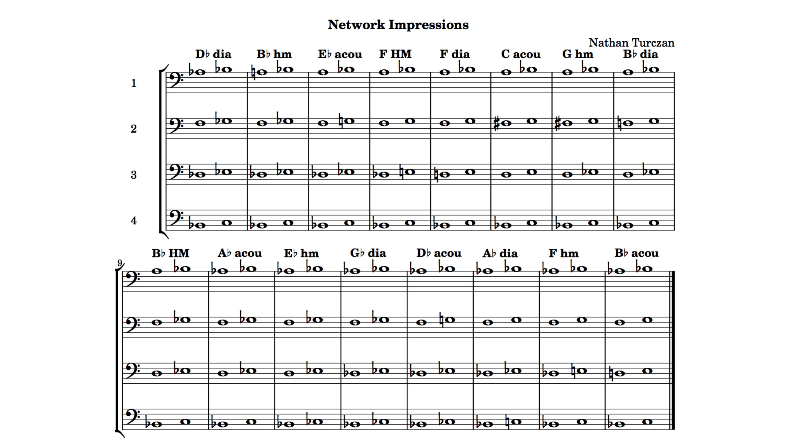
get ready!
1 / 16
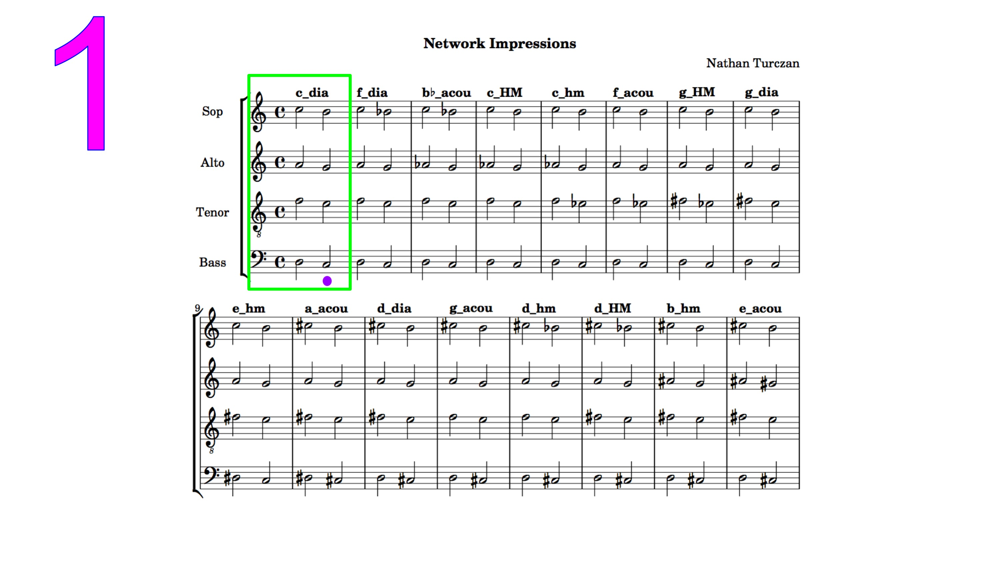
C diatonic
2 / 16
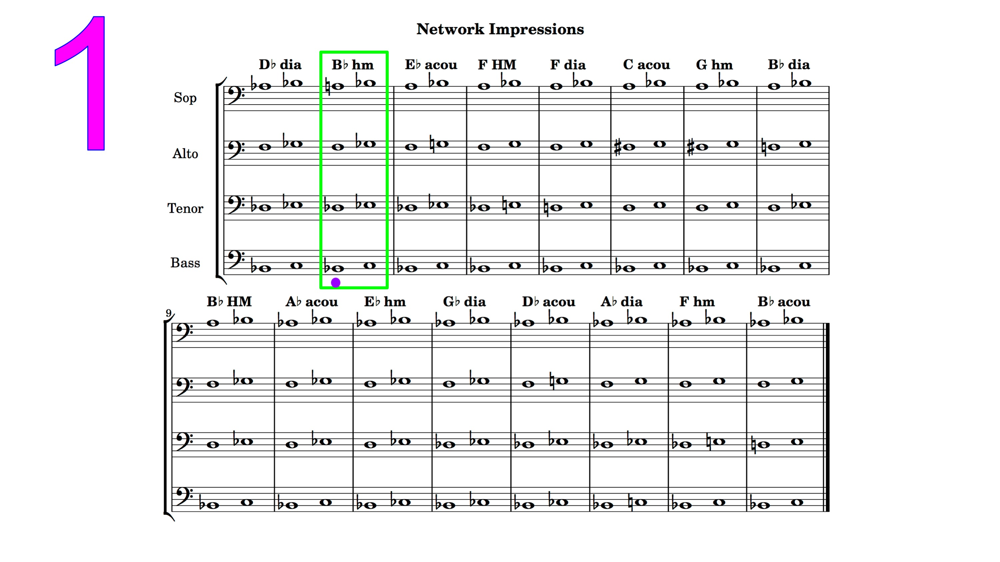
F diatonic
3 / 16
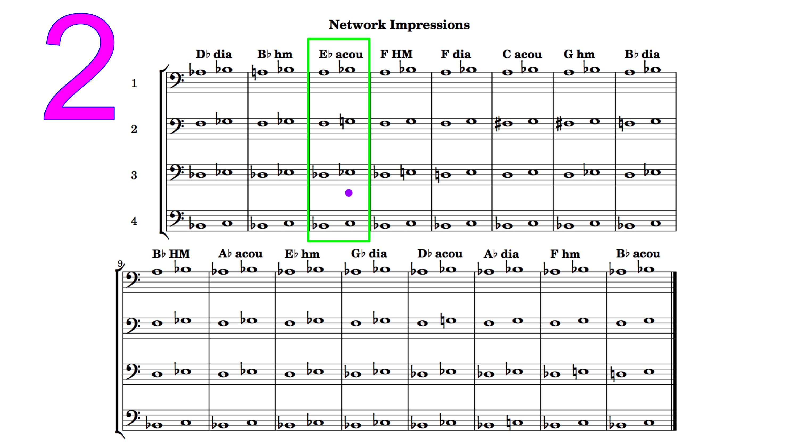
B♭ acoustic
4 / 16

C harmonic major
5 / 16
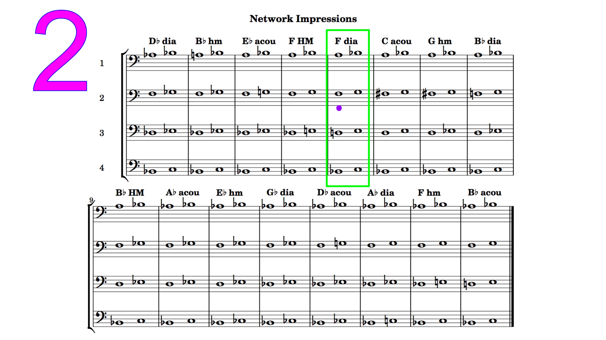
C harmonic minor
6 / 16
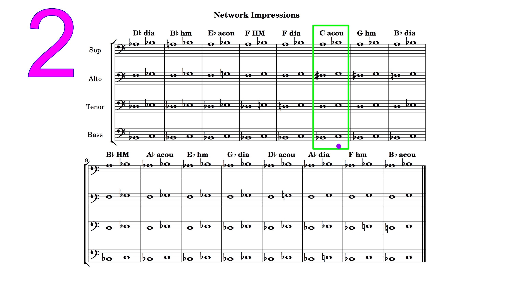
F acoustic
7 / 16
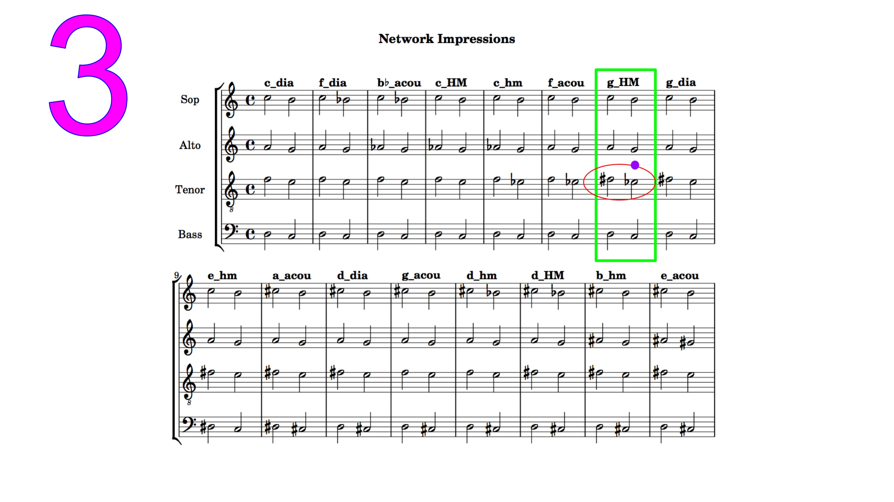
G harmonic major
8 / 16
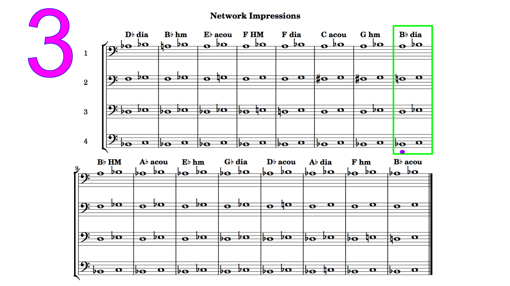
G diatonic
9 / 16
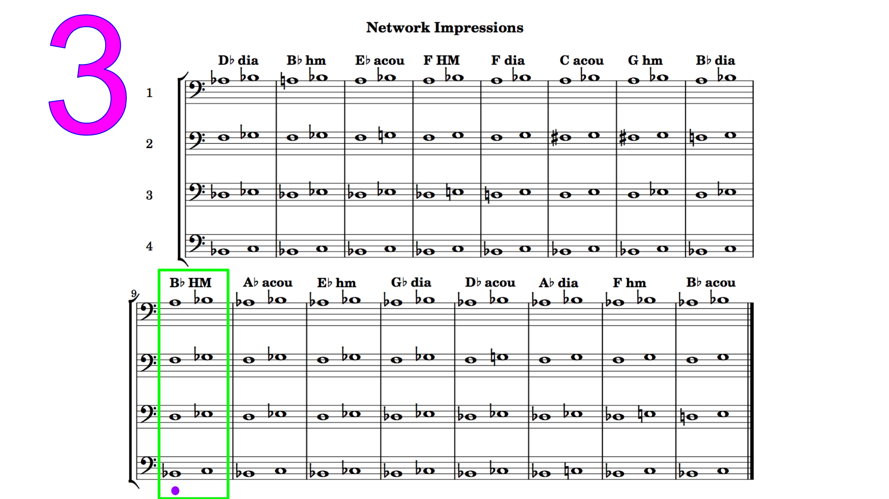
E harmonic minor
10 / 3
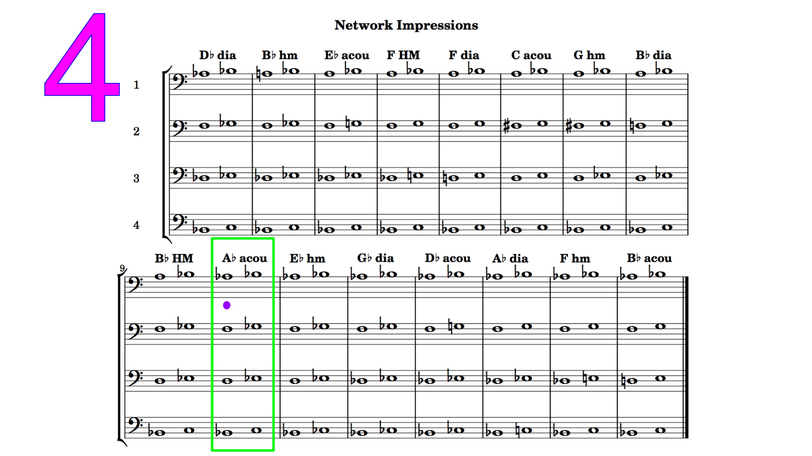
A acoustic
11 / 16
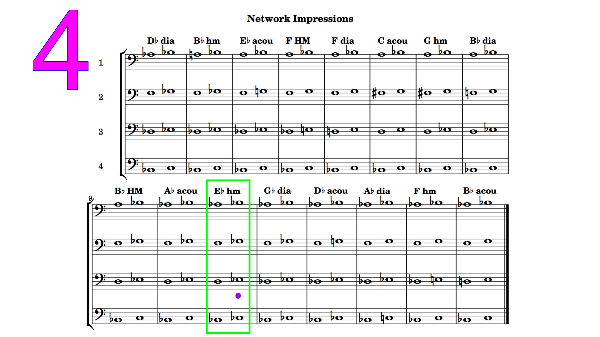
D diatonic
12 / 16
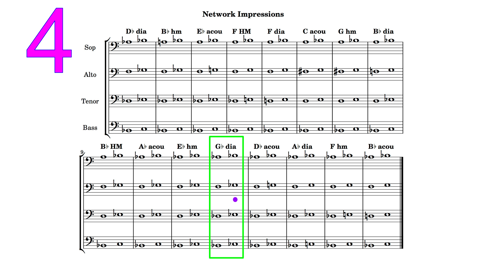
G acoustic
13 / 16

D harmonic minor
14 / 16
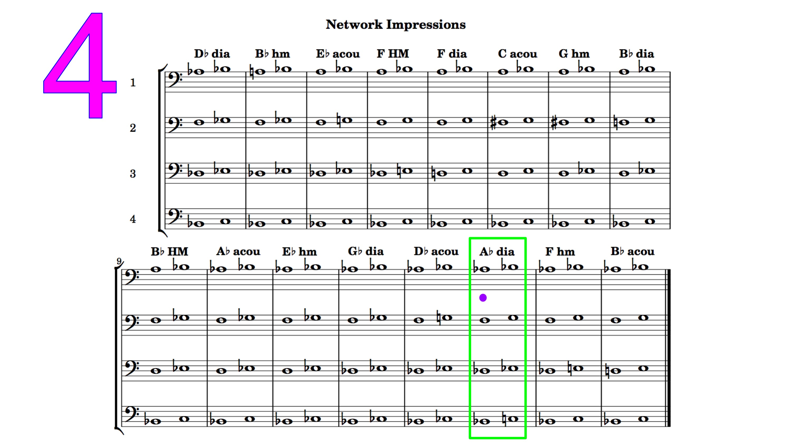
D harmonic major
15 / 16
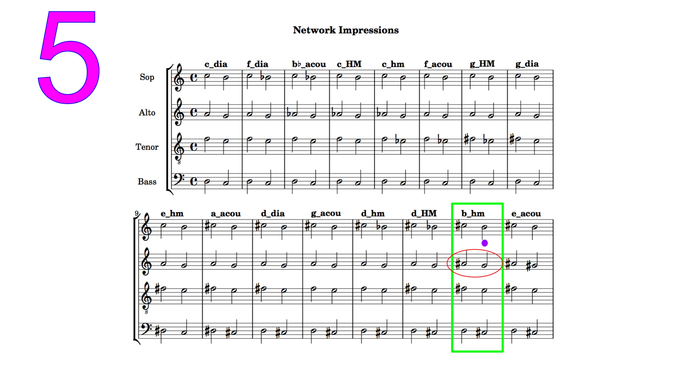
B harmonic minor
16 / 16
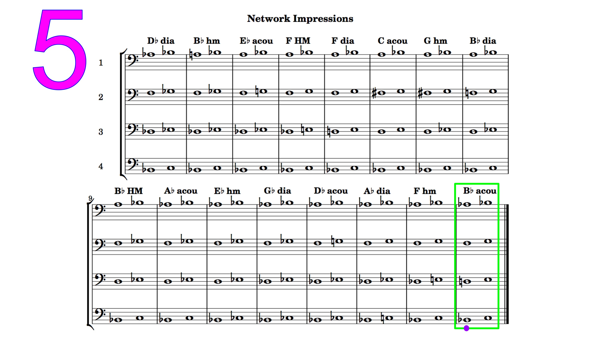
E acoustic